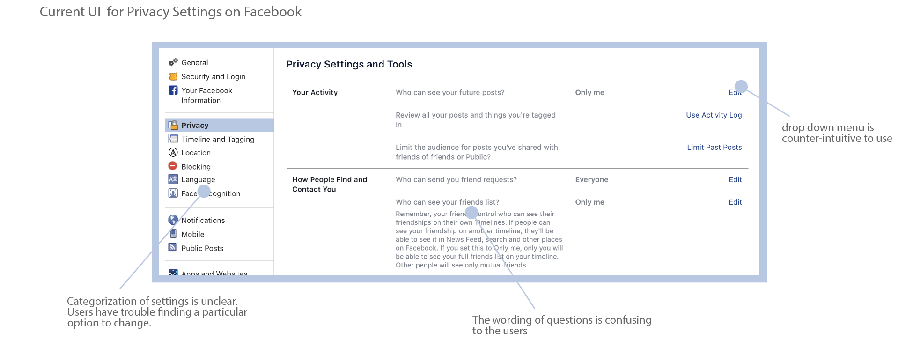
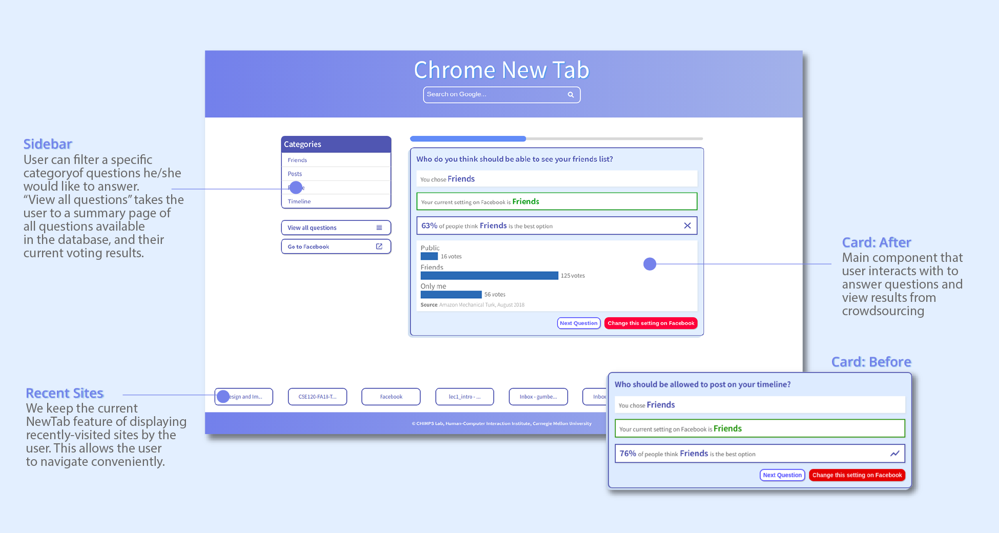
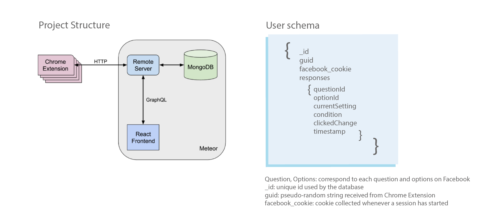

User Experience Design, Full-Stack Development, UI Testing
May - September 2018
Team: Gus [He is the best. Please check him out!]
Overview
In summer 2018, I worked as a research intern at the Human-Computer Interaction Institute at Carnegie Mellon University with Professor Jason Hong and Professor Laura Dabbish. I also worked closely with Cori Faklaris and Gustavo Umbelino. I was able to experience the entire research process, including previous literature, building tools, designing experiments, conducting interviews, and analyzing data.
Problem
Recently, we observe raising public awareness of protecting personal data on social media platforms such as Facebook. However, it’s really hard for the public to know what are good Facebook settings to have. It’s even harder to find the right place to change these settings. During interviews, we found that a lot of Facebook users don't even check out or change their privacy settings once.
Opportunity
People see the new tab in their Chrome browser many times per day. This gives us an opportunity to influence people’s behaviors with respect to privacy and security, by showing relevant information about. Thus, we wonder what if we can use Chrome NewTab to design a new tool that helps people manage their Facebook privacy settings?
In our background research, we also found studies that suggest social influence can help improve security and privacy behaviors online. This made us think of collecting preferences for Facebook and incorporating crowdsourcing to help people configure their privacy profiles.
Design
Implementation
Chrome Extension
The Chrome Extension is implemented in Javascript. For each chrome user, we create a global unique id whenever an extension is installed
Database
We use MongoDB for our database to store and update crowdsourcing results for analytics.
Server and Front-end
Our server is implemented using Meteor,a Node.js framework for fast-building web and mobile apps. The front-end was developed using React, a Facebook framework for front-end development. React comes handy because it makes it much easier to connect front-end interactions to back-end updates.
Personalization for users
The Facebook Privacy Checkup enables users to directly view their currently selected options on Facebook. To fetch and display the current user setting, we collect facebook.com cookies and send them to the user REST API as a POST request. To protect user's data privacy, the cookies are automatically cleared whenever the user exits the application.
User Testing
To evaluate the effectiveness of our application, we ran an experimental study with 14 subjects randomly distributed into three conditions. The first condition interacted with the current Facebook interface. Both the second and the third condition interacted with our tool, but subjects in the last condition were also able to see the responses of other users using the plugin. To populate the application with initial data for the third condition, we crowdsourced responses from Amazon Mechanical Turk. In this study we collected both quantitative and qualitative data, including number of privacy settings changed and ease of use.